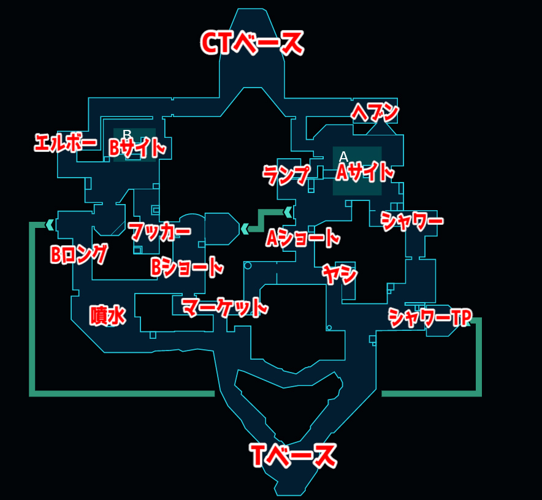
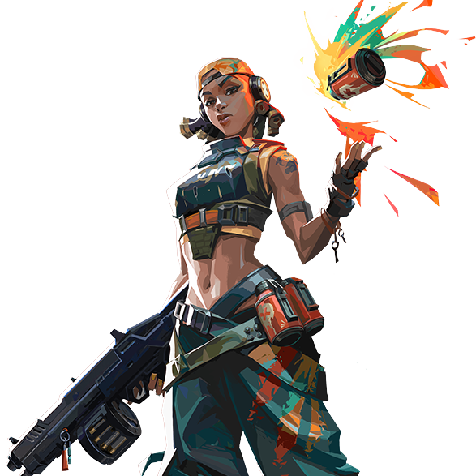
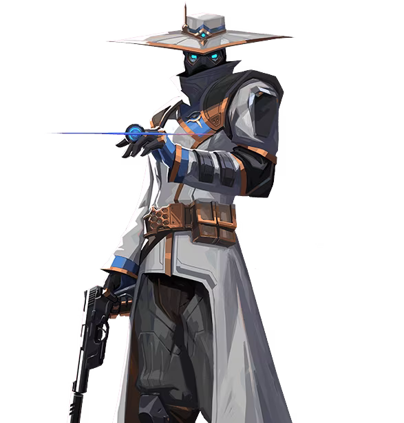
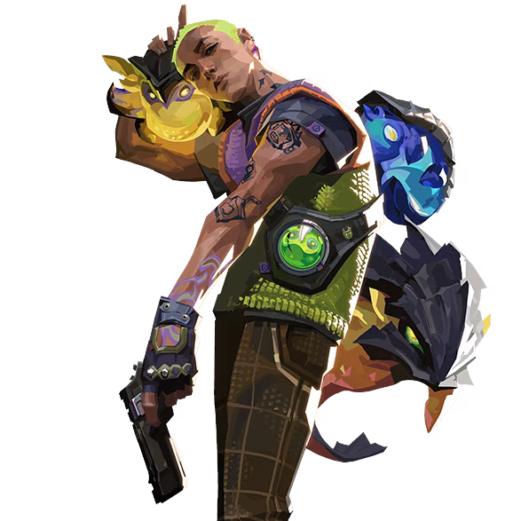
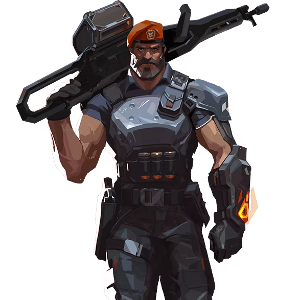

バインドのマップ

情報・特徴
バインドはユニークなテレポーターシステムを持つマップで、2つの主要サイト間を迅速に移動できるテレポーターが設置されています。この特徴により、急速なローテーションが可能であり、素早い戦術の変更が求められます。
また、バインドは狭い通路と開けたエリアの組み合わせが特徴で、さまざまな射程での交戦が発生します。AショートやBロングなどのエリアでは特に注意が必要です。
全体マップ・マップの詳細

バインドのおすすめ構成
バインドでは、テレポーターを利用した奇襲や素早いローテーションが重要となるため、機動力のあるエージェントや範囲攻撃を持つエージェントが効果的です。「ジェット」や「レイズ」などが特に有用です。また、「サイファー」や「キルジョイ」などのエリアコントロール能力を持つエージェントも有効です。
| おすすめチーム構成 | ||||
|---|---|---|---|---|
|  レイズ |
 サイファー |
 ゲッコー |
 スカイ |
 ブリムストーン |
バインドの基本的な攻め方
Aサイト側の立ち回り
バインドのAサイトを攻める際は、AショートとAランプを迅速に制圧することが重要です。テレポーターを利用して急襲することも戦術の一つです。スモークやフラッシュを使用してクリアリングを行い、安全にサイトに侵入します。
Bサイト側の立ち回り
バインドのBサイトを攻める際は、Bロングとフッカーの制圧が重要です。特にBロングは長距離の射線が通るため、スナイパーライフルが有効です。テレポーターを活用してバックサイトへの侵入を狙うことも効果的です。
バインドの基本的な守り方

Aサイト側の立ち回り
Aサイトを守る際は、AショートとAランプを抑えることが重要です。テレポーターからの急襲に備えて、常に周囲を警戒し、迅速に対応できるようにします。
Bサイト側の立ち回り
Bサイトを守る際は、Bロングとフッカーを確実に抑えます。テレポーターを利用したバックサイトへの侵入に備え、適切なポジショニングを取ります。スナイパーライフルを持ったエージェントが特に有効です。